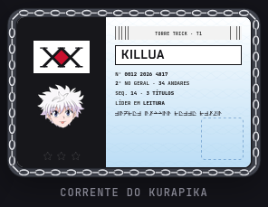

Correntes do Kurapika
A família inteira num lugar só. As novas saem todas de um gerador (corrente.js): o mesmo elo da licença,
prateado, e cada item com a marca de uma corrente da mão dele. As de hoje ficam ao lado para comparar.
Borda · Dowsing Chain
novabd-corrente · raroElo de frente e de lado alternados, uma argola em cada canto recebendo as duas pontas, nada passa da faixa. A espessura é fixa em px, então o card grande não engrossa. A esfera da Dowsing Chain fica no canto de baixo à direita; ela balança sem parar e, com o mouse por cima, acelera e abre mais (a Dowsing "procurando").
Revisar a lista 3 de Cálculo
Hoje · 40 min
Projeto pessoal
Ler o capítulo 4 e anotar as dúvidas para a monitoria de quinta.
Painel grande
Um card alto, como o do chefão ou do resumo, para ver se a corrente fica fina e os cantos fecham.
Variação: fundo por baixo
O fundo do card vai até a borda de fora; a corrente fica por cima.
as de hoje
Antiga (CSS)
A que está à venda hoje: listras douradas.
Provisória (Gemini)
bd-corrente-nova: 11 px, cadeados nos cantos.
Barra de XP · Judgment Chain
novafx-corrente · raroA corrente vai e volta presa ao ilhós da lâmina da Judgment Chain: as duas andam juntas, então o encaixe nunca muda. Ela recua um pouco e volta até a ponta, sem passar do XP de verdade. O trecho cheio ganha um fundo levemente mais claro para a barra continuar legível. Abaixo, as alturas que o jogo usa.
a de hoje
Vida do chefão · escarlate
novahp-corrente · raroA corrente vira vermelha, o escarlate dos olhos (Emperor Time): é a vida do chefão, e fica claro na hora que não é a barra de XP. Mesmo elo das outras. Nas variações, o trecho perdido mostra a corrente apagada, e o brilho pulsa como os olhos.
as de hoje
Licença · estojo de corrente
lic-corrente · parada (multiplayer off)É de onde veio o elo. Fica como está até o multiplayer voltar.

As peças
o vocabulário da famíliaTudo acima é montado com estas peças. Um item novo do Kurapika (cursor, transição, tema) usa as mesmas, com a marca de outra corrente: Holy Chain (polegar, cruz), Chain Jail (médio), Steal Chain (mínimo).